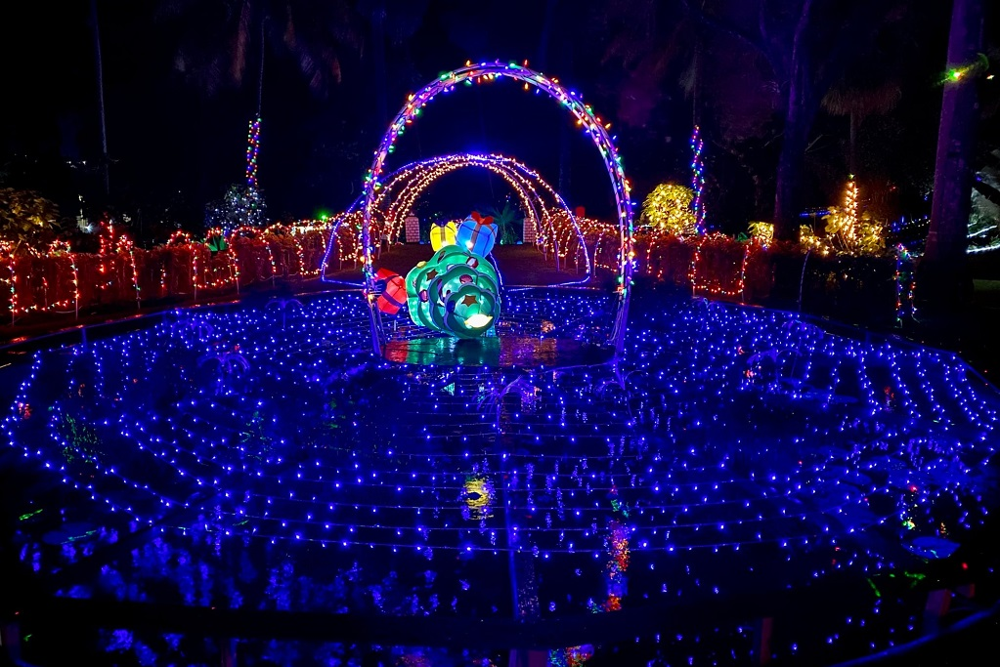
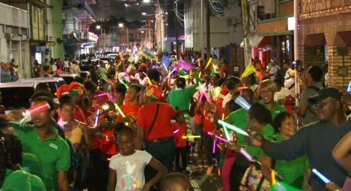
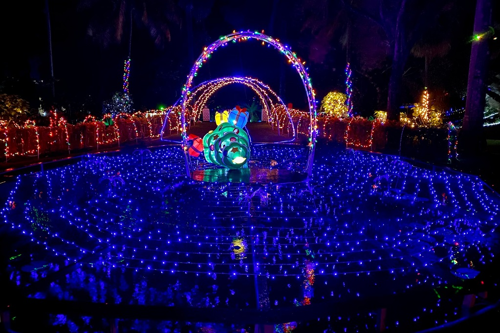
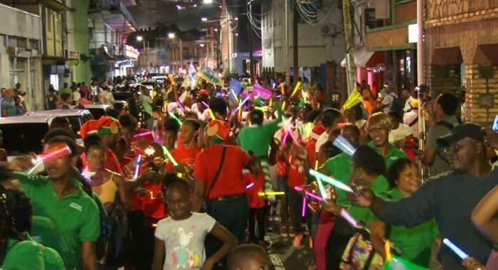

.jpg)
.jpg) 



.jpg)
.jpg)
.jpg)
NINE MORNINGS
The Nine Mornings Festival in SVG
The festival has its roots in the early 20th century when, in the weeks leading up to Christmas, Vincentians began to gather before dawn for nine consecutive mornings to participate in various activities.
Believed to have originated as a religious observance, with participants attending early morning church services to commemorate the nine days leading to Christmas. Over time, the festival has evolved into a more secular celebration of Vincentian culture, featuring a wide range of activities that highlight the island's heritage and community spirit.
During the Nine Mornings Festival, communities across Saint Vincent and the Grenadines come alive with a host of activities. These may include street concerts, parades, beauty pageants, cultural performances, food fairs, and traditional games.
Hightlights:
A central feature of the festival is the "Lighting of the Town," where towns and villages are adorned with colorful lights and decorations, creating a festive atmosphere.
One of the highlights of the festival is Market Day, where local vendors set up stalls selling a variety of goods, including crafts, food, and souvenirs. This is an excellent opportunity for visitors to experience Vincentian culture and cuisine.The Festival also offers a chance to indulge in traditional Vincentian cuisine, with local delicacies such as fried bakes, saltfish, johnnycakes, and cocoa tea being popular choices.
The festival is not just about entertainment but also fosters a sense of community and togetherness. It provides an opportunity for Vincentians to come together, celebrate their heritage, and strengthen social bonds.